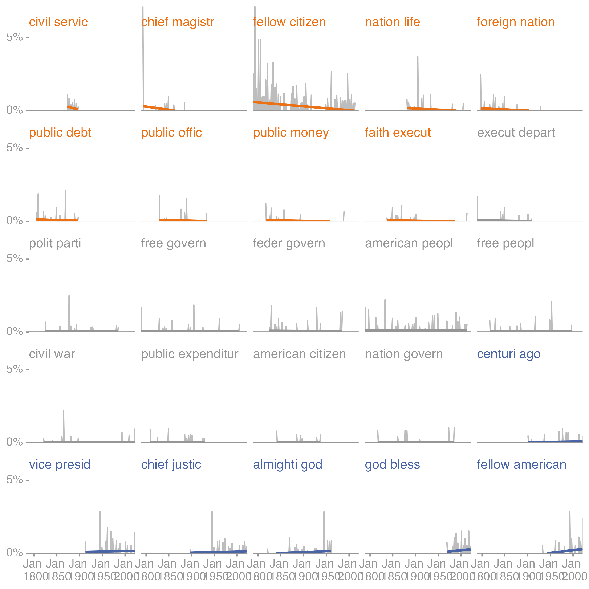

The package primarily supports provides functions to analyze and visualize the results of an stm topical model, but includes also functions to explore simple term trends in a text corpus. This can be thought of as a first “naive” topical analysis and is a useful initial exploration of a text collection.
All examples in the following sections are based on a sample dataset from the quanteda package; the corresponding topic model data has been added as package datasets.
For the following analyses common English stop words were typically removed from the source texts, as are numbers and words were “stemmed”1.
The following table utilizes the package’s term_counts() function to list the most frequent terms in the analyzed preprint titles.
library(topicsplorrr)
library(dplyr)
# use quanteda's inaugural presidential speeches as sampel data
sample_docs <- quanteda::convert(quanteda::data_corpus_inaugural,
to = "data.frame") %>%
mutate(Year = lubridate::as_date(paste(Year, "-01-20", sep = "")))
# extract unigrams
processed_terms <- unigrams_by_date(textData = sample_docs,
textColumn = "text",
dateColumn = "Year")
# and compute term shares
top_title_terms <- term_counts(processed_terms) %>%
slice(1:10) %>%
mutate(term_share = term_share*100)
top_title_terms %>%
kableExtra::kbl(format = "html",
caption = "Most frequent terms in the sample documents",
col.names = c("Term", "N", "%"),
digits = c(0,0,2)) | Term | N | % |
|---|---|---|
| nation | 693 | 1.36 |
| govern | 687 | 1.35 |
| peopl | 632 | 1.24 |
| power | 375 | 0.74 |
| countri | 359 | 0.71 |
| world | 350 | 0.69 |
| citizen | 304 | 0.60 |
| constitut | 289 | 0.57 |
| peac | 289 | 0.57 |
| law | 279 | 0.55 |
The variation of term shares over time can be the next step in exploring the basic “topical” trends in a text collection. The following code extracts the bigram term counts in sample documents and then plots the temporal frequencies for the 25 most frequent bigrams.
The code below utilizes the package’s plot_term_frequencies() function. A linear trend line is added as a simple visual aid to distinguish terms with increasing, decreasing or stable trends. The example shows monthly shares of bigrams and demonstrates some additional options such as specifying additional stop words (here the most common terms in the preprint titles).
library(topicsplorrr)
terms_by_date(textData = sample_docs,
textColumn = "text",
dateColumn = "Year",
#customStopwords = c("america", "government"),
tokenType = "bigram") %>%
plot_term_frequencies(timeBinUnit = "year", topN = 25, nCols = 5,
minTermTimeBins = 0)
I.e. all words are reduced to their word stem and words like “model”, “models”, “modelling”, “modeling” are transformed to the word stem “model”↩︎